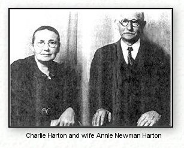

|
Charlie
Davis Harton
1861- 1956
The following is taken from the family history written by
his daughter, Pearl Harton Martin for the Vance County, N.C. Heritage Book.
Although the photograph is of poor quality, there
is a dignity and serenity about his face that I find particularly
appealing.
|
 |
|
"My father, Charlie Davis
Harton, was born September 13, 1861 in Warren County. He was the son of Robert Pegram Harton and his grandfather was Gideon
Harton. Robert P. Harton owned extensive farm land and gave the land for the Zion Methodist Church near his homeplace between Henderson and Norlina. Many members of the family are buried there. The Harton name was unique; we have never heard of any other family by that name.
Charlie Harton was a farmer until he had a fall which left him unable to do farm work. On October 14, 1885, he married Annie Elizabeth Newman, daughter of William Daniel and Rhoda Caswell Moss Newman, of Warren County. Charlie sold a bale of cotton to have money for a honeymoon which they spent by going to the State Fair in Raleigh. My father loved horse racing and seldom missed the fair. One year his purse was stolen at the fair and he never wanted to go again.
In 1905, unable to do farm work, the family moved to Henderson and lived at 414 Andrews Avenue. His first job in Henderson was manager of a knitting mill as chief cutter. Later, he operated a grocery store in the 400 block of South Garnett Street. When he went out of that business, he was a watch'man for the Seaboard Railway crossing. His post was up a tall ladder and, when he reached the age that he was unable to climb the ladder, he retired.
Members of the Charlie Harton family were charter members of the Christian Church on Rowland Street. He was ordained deacon when the church was organized and remained in that service until his death. Also, he was one of the first secretaries elected at the church. He had a wonderful disposition and never had an enemy so far as I know. Young and old alike loved him and called him, "Uncle Charlie." The Harton Young People's Class at the church was named in his honor. This group of teenagers purchased a light to place behind the stained glass Harton window which had been given by the femily to honor Charlie and Annie
Harton.
My grandmother, Rhoda Moss Newman, was a very large woman; she weighed over 300 pounds. At her home they built a ramp for her to get in the wagon which was the only conveyance at that time. At the church where she belonged, she was helped out of the wagon on a chair lifted by two men. She was dearly loved and everyone called her, "Big Mama."
My father always said he was going to live to be 100 but he died in November 1956, about two months past age 95."
The descendants of Charles Davis Harton
are included in the family pages.
|